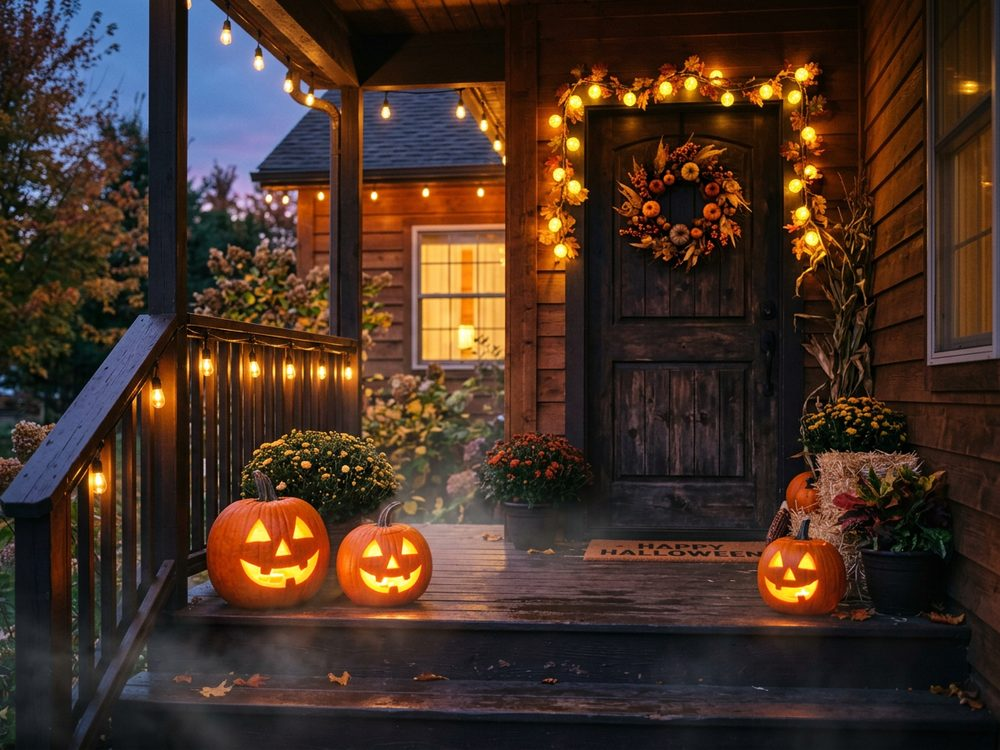
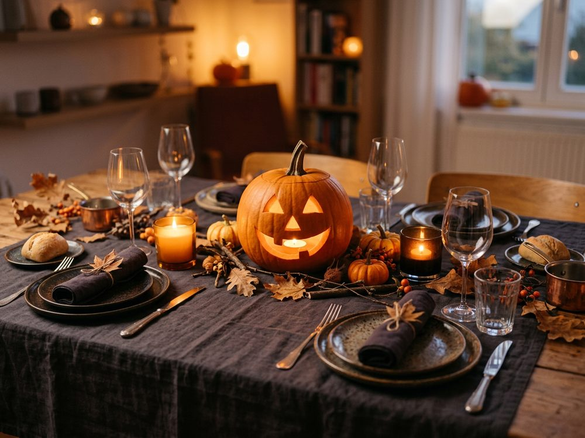
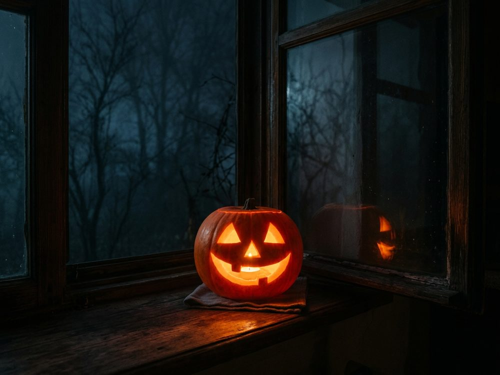
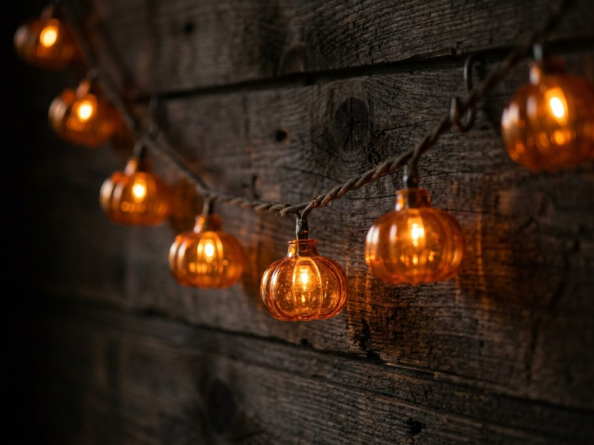
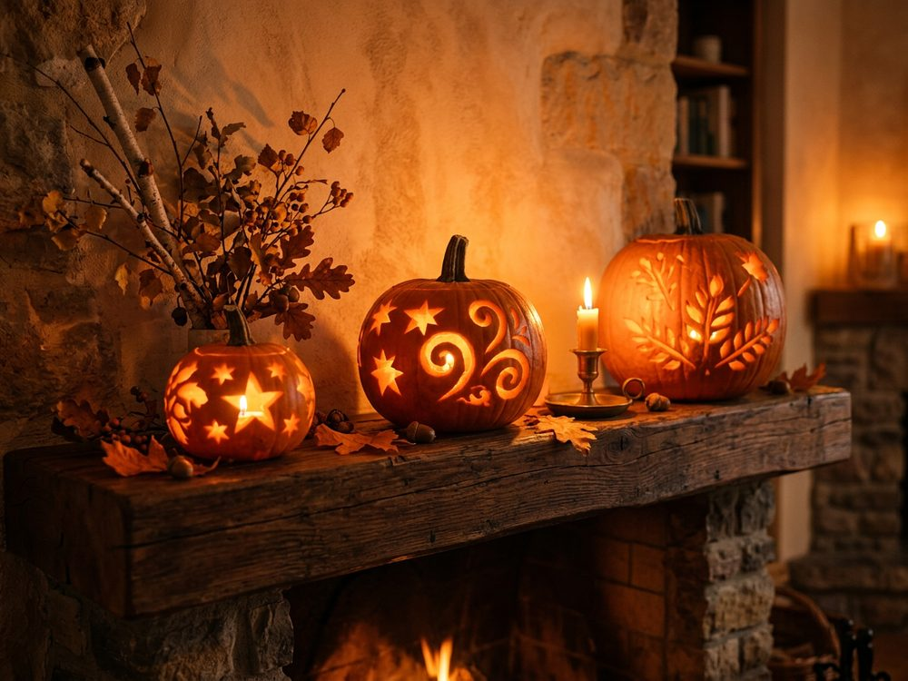

Оформление дома
Шесть идей для хэллоуинского декора
От крыльца до каминной полки — не обязательно делать всё сразу, достаточно одной-двух идей, чтобы дом почувствовал вечер.

Крыльцо и вход
Пара тыкв у двери и тёплая гирлянда над крыльцом работают лучше десятка мелких деталей — оформление видно уже с улицы.

Праздничный стол
Тёмная скатерть под приборы и одна крупная тыква в центре стола — любые оранжевые детали на таком фоне сразу читаются как тематические.

Светильник у окна
Один вырезанный фонарь на подоконнике, снятый в темноте, даёт больше атмосферы, чем гирлянда пластиковых украшений.

Гирлянда вместо гирлянды
Обычную новогоднюю гирлянду легко превратить в хэллоуинскую, если лампочки в форме тыкв — продаются отдельно, без остальной мишуры.

Каминная полка
Если камина нет — тот же приём работает на любой полке или комоде: несколько тыкв разного размера, составленных вместе, выглядят как готовая композиция.
Минимум вместо максимума
Не весь декор обязан быть ярким — тыква, сухая ветка и свеча в приглушённых тонах смотрятся не менее празднично, чем витрина магазина.